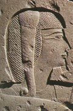

главная  персоналии
персоналии  Хамуас
Хамуас
главная |

Личность в историикраткая энциклопедияПроект «Личность в истории» посвящен людям — современникам грандиозных исторических событий, носителям редких качеств или людям, взгляды которых опередили их время. |
|||||
Коротко |
Статьи |
Персоналии |
Литература |
||
Хамуас |
|||||
|
«Xaeмyac надолго оставил по себе память в египетском народе, который много веков спустя, как свидетельствуют о том Геродот и поздние демотические записи эллинистического и римского времени, в своих сказках изображал Хаемуаса (Сатни-Хаемуаса, или Сетона) как могущественного чародея и мага…». Стучевский ??. А., |

Портрет Хамуаса. Рельеф из Серапиума в Мемфисе. Лувр. Париж. | ||||
Биографическая справкаХамуас (Хаемуас) сын Рамсеса II и царицы ??стнофрет. Жил в XIII в. до н. э. Долгие годы был наиболее влиятельным человеком при дворе своего отца. Царевич Хамyac исполнял обязанности верховного жреца («сем») Птаха в Мемфисе, кроме того в 30-й год правления Рамсеса II был признан наследником престола. Будучи совсем молодым он принимал участие в войнах в Сирии. О Хамуасе сообщают многочисленные надписи. Так он присутствует в трёх списках детей Рамсеса II. О нем сообщают изображения и тексты в Рамессеуме и в Карнаке. Принимал активное участие в организации государственных праздников — руководил четырьмя (а возможно и пятью) юбилеями «тридцатилетия» своего отца. Кроме того, он интересовался историей, занимался реставрацией старых стершихся надписей, сохраняя таким образом память о прежних фараонах. Гробница Хамуаса находилась, по-видимому, в северной части Саккары, в непосредственной близости к Серапеуму. Позднее саркофаг с телом Хамуаса был помещен в небольшой подземный склеп в Серапеуме. Цитаты«…Сатни-Хемуас прошел дальше, в седьмой зал, и увидел там великого бога Осириса. Он сидел на троне из чистого золота, увенчанный короной Атеф. По левую руку от него стоял Анубис, великий бог, а по правую руку от него стоял Тот, великий бог, и все боги судилища царства мертвых теснились справа и слева от них. Перед ними стояли весы, на которых боги судилища Царства мертвых взвешивали содеянное людьми добро и зло. Великий бог Тот записывал то, что показывали весы, а Анубис оглашал приговоры богов. Если боги решали, что злодеяния человека более многочисленны, чем его добрые дела, они отдавали его во власть Пожирательницы-собаки повелителя царства мертвых, которая разрывала на части его душу и тело, так что дыхание жизни к нему уже не возвращалось никогда. Но если они находили, что добрые дела человека более многочисленны, чем его злодеяния, они вводили его в совет богов царства мертвых и душа его отправлялась на небо и пребывала там среди чистых душ. Если же они находили, что злодеяния человека равны его добрым делам, они помещали его среди кающихся душ, которые служат богу Сокар-Осирису». («Сказки о верховных жрецах Мемфиса». «Рамсес II на протяжении своих более чем 66 лет царствования отпраздновал 14 юбилеев «тридцатилетия» (хеб-сед) что превосходит количество подобных юбилеев, отмеченных каким-либо другим фараоном. Во всех этих празднованиях участвовало много высокопоставленных должностных лиц, но только в девяти случаях известны их имена. Любимый сын Рамсеса II, царевич Хаемуас, и визирь Ха вместе руководили первыми пятью юбилеями, а визирь Ха — еще и шестым юбилеем. Хаемуас, однако, оставил больше надписей о юбилейных торжествах своего отца, чем визирь Ха. В пещерном храме Хоремхеба в Гебель эль-Сильсиле Хаемуас зафиксировал три надписи, в районе Асуана — две и в Эль-Кабе — одну. Так, в нише на фасаде пещерного храма Хоремхеба в Гебель эль-Сильсиле Хаемуас повелел изобразить себя и начертать надпись, сообщающую о данном ему приказе отца провозгласить в 30-й год царствования Рамсеса II первый юбилей тридцатилетия». По сторонам от двери, открывающей ход из галереи в святилище того же пещерного храма, Хаемуас повелел поставить две стелы, тексты которых указывают на 30, 34, 37, 40-й годы как на даты первых четырех юбилеев Рамсеса II. В районе Асуана, в восточной части о-ва Бига, Хаемуас оставил стелу, упоминающую первые три юбилея — в 30, 34 и 37-й годы царствования Рамсеса II. Л. Хабаши обнаружил в Асуане текст надписи и рельефную сцену, которые указывают на провозглашение пятого юбилея в 42-й год правления Рамсеса II. На фасаде храма Аменхотепа III в Эль-Кабе царевич Хаемуас изображен перед своим отцом с сопроводительным текстом, утверждающим, что он прибыл в это место в 41-й год для провозглашения пятого юбилея Рамсеса II». (Стучевский ??. А. Рамсес II и Херихор. «У одного фараона был взрослый сын. Звали его Сатни-Хемуас. (Сказания о Сатни-Хемуасе. Список литературы
|
|||||
|
{kind=link}